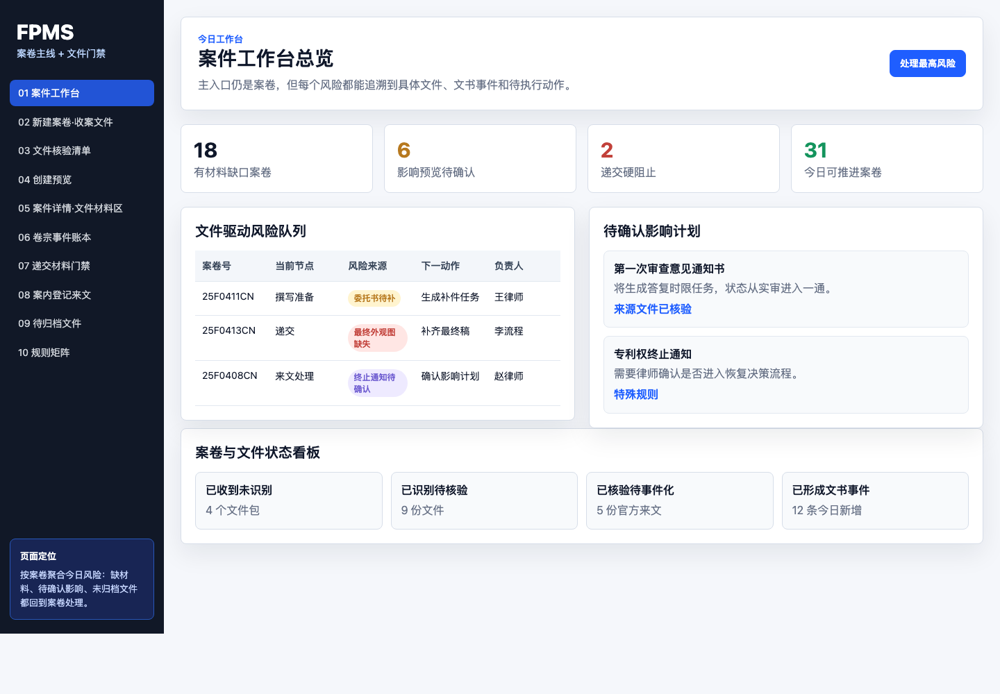
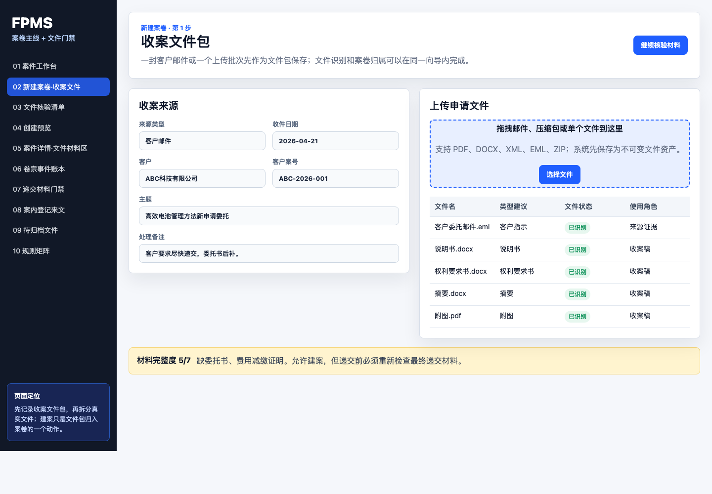
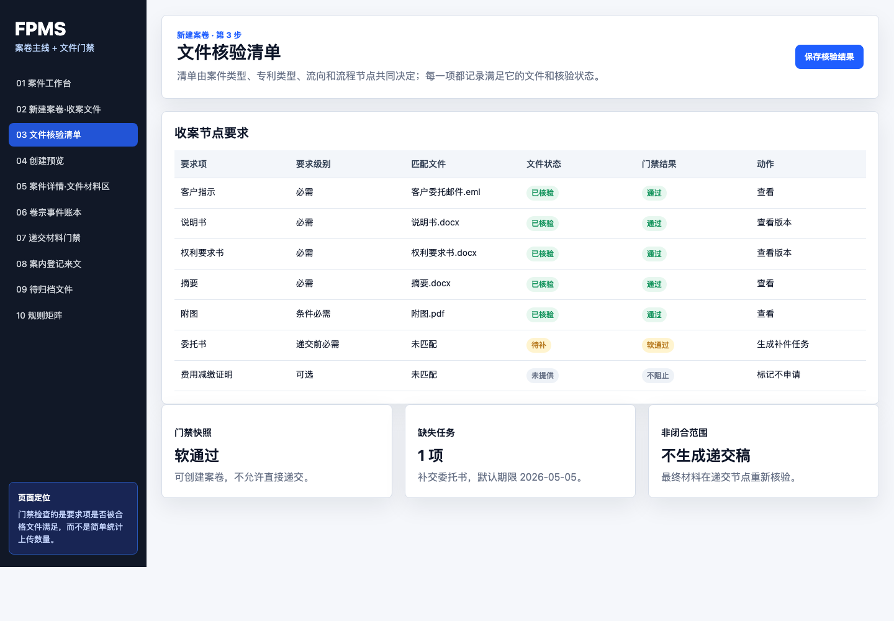
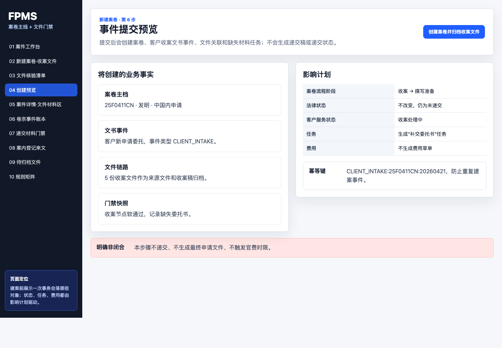
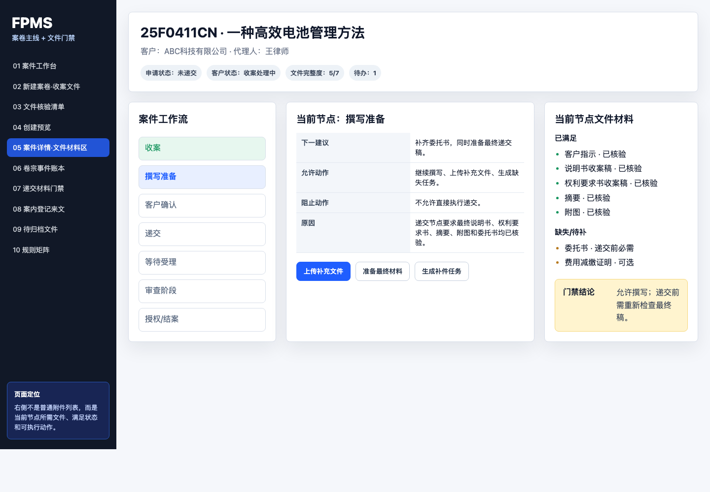
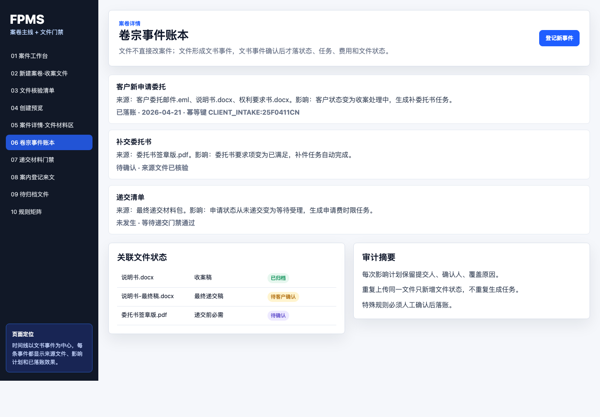
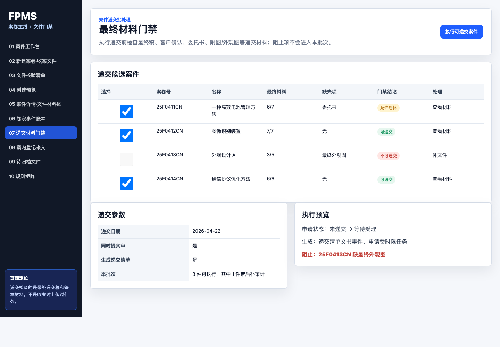
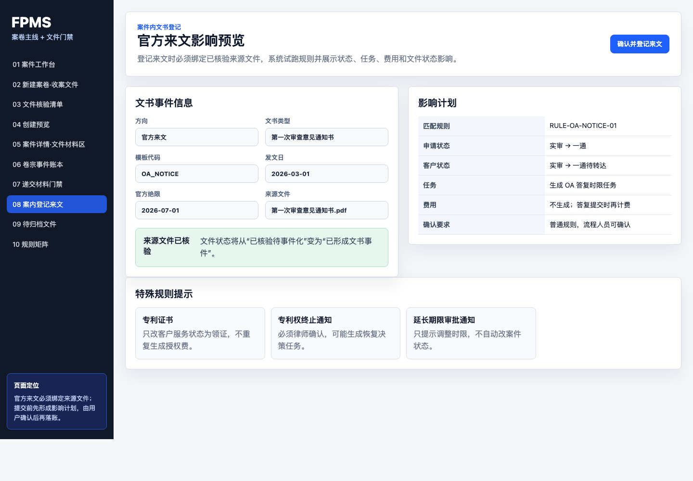
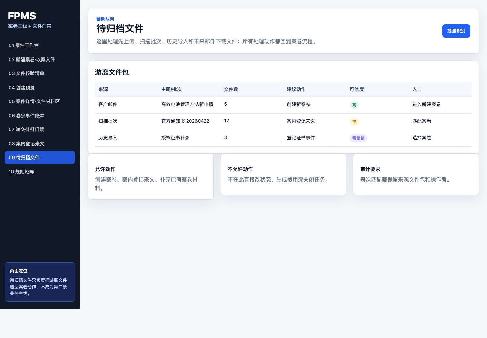
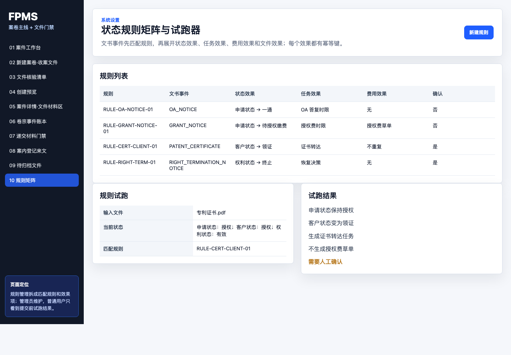

第一阶段设计包
案卷主线 + 文件门禁
本版把文件驱动落到文书事件、门禁快照、影响计划和效果账本，避免只在案件工作流上贴一层附件检查。
01 案件工作台总览原型 01
把文件风险、文书事件待确认、最终材料缺口并入案件工作台。

02 新建案卷 - 收案文件原型 02
新案从客户邮件、委托文件和申请材料开始，先落文件包和文件状态。

03 新建案卷 - 文件核验清单原型 03
材料清单细化到要求项、文件角色、文件状态和后续动作。

04 新建案卷 - 事件提交预览原型 04
把建案动作表达为一个可审计的客户收案文书事件。

05 案件详情 - 工作流与文件材料区原型 05
案件详情页同时展示流程阶段、文件要求、门禁结果和可推进动作。

06 案件详情 - 卷宗事件账本原型 06
用卷宗事件账本替代普通附件表，支持审计和回放。

07 案件递交 - 最终材料门禁原型 07
批量递交保留，但按最终材料门禁自动分组通过、警告和阻止。

08 案内登记来文 - 影响预览原型 08
中间文件登记从案卷进入，来源文件和影响预览成为提交门禁。

09 待归档文件 - 辅助队列原型 09
未归档文件包按建议动作跳转到新建案卷、案内登记来文或补充材料。

10 状态规则矩阵 - 试跑器原型 10
状态规则矩阵增加试跑器，避免一行规则同时承担太多副作用。
